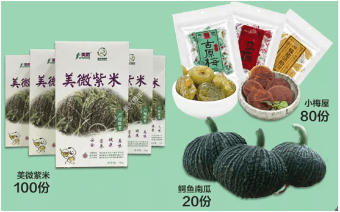
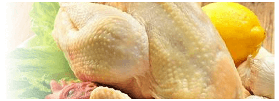

11月25日到28日（本周五到下周一），第七届广东农博会要来啦！就在广州琶洲广交会展馆B区9.1馆和10.1馆。
展会期间，主办方每天将送出200份特色农产品礼品给前来观展的市民！包括100份美微紫米（新兴微丰农业科技有限公司提供），80份梅子制品（小梅屋提供），20份鳄鱼南瓜（慢生活农场提供）。参展企业也有大量优质农产品相送。

领取礼品攻略
活动时间：11月25-27日
1用手机玩游戏《广东地标农产品知多少》
游戏规则
答对7道问题，即有机会获赠特色农产品！ 获得领奖资格的亲先登记姓名及联系方式，并将获奖页面截图发到“广东农博会”官方微信获得领奖资格的亲先登记姓名及联系方式，并将获奖页面截图发到“广东农博会”官方微信主办方将每天抽取100位幸运儿送出100份特色农产品；中奖者根据微信公号回复的信息到活动现场领取礼品。
2现场集印章赢农产品礼包
游戏规则
展馆内将设8个盖章处。
观众到活动现场免费领取《南方农村报》1份，逛展过程中盖齐：
“第”“七”“届”“广”“东”“农”“博”“会”8个印章，
即可到服务处领取农产品礼包1份。每天100份，数量有限，先到先得。
参展企业现场也有好礼相送
听《舌根上的幸福》制作背后的故事，教你辨别食品安全。还有机会免费领取清远鸡（总共20只，冰鲜）、
杏花鸡（总共20只，熟食）、连州菜心（总共60箱左右）。
现场紫米知识竞猜，就有机会领取新兴微丰农业科技有限公司的美微紫米。
除了有礼品送，本届农博会亮点多多，好吃、好玩、好优惠，绝对能让前来逛展的观众满载而归。
本届农博会参展企业近800家，3000多种农产品将集中展示展销。
3000多种农产品！你还担心没有想吃想买的吗？
农博会现场还有好多好多好吃的农产品，备受关注的第二届广东“十大名牌”系列农产品也将在本次农博会上揭晓，同时展销。
另外，本届农博会还特别开设了名牌农产品超市，数百个广东名特优新农产品集中供市民选购，可以微信或支付宝付款
好玩
1、三招教你辨别清远鸡
“一楔”、“二细”、三麻身”，就能挑选出正宗的清远鸡。

对，就是这么神奇。想学吗？来农博会现场。技术员将现场为你传授挑选清远鸡的小诀窍。
2、农产品时装秀
时装秀看得多了，农产品时装秀你看过吗？
11月25日11:30-14:00，现场将有一场广东“十大名牌”系列农产品元素时装表演。
３、“机器人”带你品尝各种特色农产品
“机器人”带你品尝各种特色农产品是一种怎样的体验？
好优惠
小梅屋
现场提供免费试吃，11款袋装、瓶装系列产品，买3送1。
慢生活农场
现场开卡送价值98元礼盒，农博会期间所有充值卡打9折优惠。
微丰农业
新兴微丰农业科技有限公司的美微紫米和紫珠香米现场买1送1，多买多送。
名牌超市
广东名牌农产品超市，青菜1元1包，土鸡蛋1元1个……数量有限，先到先得。
更多优惠请来农博会现场！